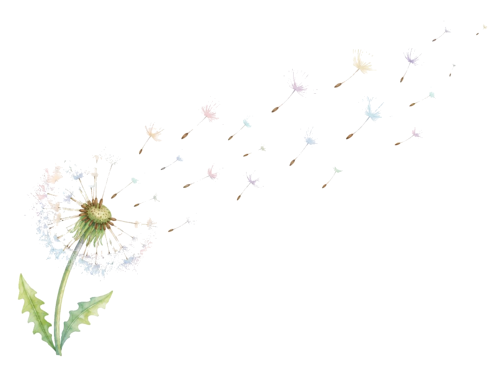

居場所をつくる
病気・障害の家族を持つ子ども若者（かつてそうだった者も含む）が安心して集まれる、高知の居場所をつくります。誰でも気軽に来られる、そんな場所を目指します。

About us
なぜこの場所をつくったのか。誰と、どんな未来をつくりたいのか。
Our beginning
家族のケアを担う子ども・若者は、ほかの子どもたちよりも精神的な健康リスクが高いといわれています。
わたげミーティングは、家族のケアを経験した若者と、保健医療福祉分野の研究者が出会ったことから始まりました。高知という土地から、病気・障害の家族を持つ子ども若者（かつてそうだった者も含む）が「ひとりじゃない」と感じられる場所をつくりたいという想いで立ち上げました。
たんぽぽのわたげのように、想いの種が必要な人へそっと届く存在を目指します。
What matters to us
「支援する側・される側」に分けず、当事者の声と選択を中心に考えます。
病気・障害の家族を持つ子ども若者（かつてそうだった者も含む）が安心して集まれる、高知の居場所をつくります。誰でも気軽に来られる、そんな場所を目指します。
「同じ経験をした人がいる」という事実が、どれほど支えになるか。ピアサポートを大切に、横のつながりを育てます。
家庭状況も感じ方も一人ひとり違います。「ヤングケアラーだから」と一括りにしません。
わたげミーティングのメンバーや、専門家、大学の教授などと協力し講演活動や、講師派遣を行っていきます。
From the founder
わたげミーティングは、家族のケアを経験した若者・保健医療専門職（研究者）で立ち上げました。
代表を務める私自身も、メンタルヘルス上の課題を持つ家族のもとで生活してきました。自分と同じような経験をした仲間と出会い、横につながれる場は、全国を見てもまだそれほど多くありません。
特に、その多くは大都市や首都圏に集中しており、地方ではこうした場や支え合いの機会が十分にあるとは言いにくい状況です。
そこで、この高知でも「居場所」を立ち上げようと、保健医療福祉分野の研究者と高知県の当事者数名に声をかけ、任意団体として立ち上がりました。
「わたげミーティング」を通して、同じ経験をした仲間との「横のつながり」を紡ぐことが、自分らしい人生を歩むきっかけづくりになるのではないか、と考えています。
たんぽぽのわたげのように、同じ思いを抱える仲間のもとへ、そっと届く存在でありたい。
そして、困ったときにふと思い出してもらえるような、お守りのような団体を目指してまいります。
どうぞよろしくお願いいたします。
― わたげミーティング代表 山本